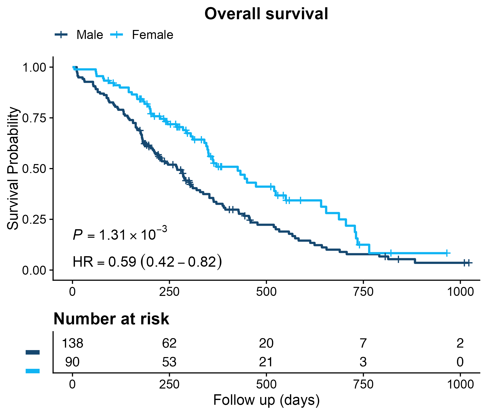
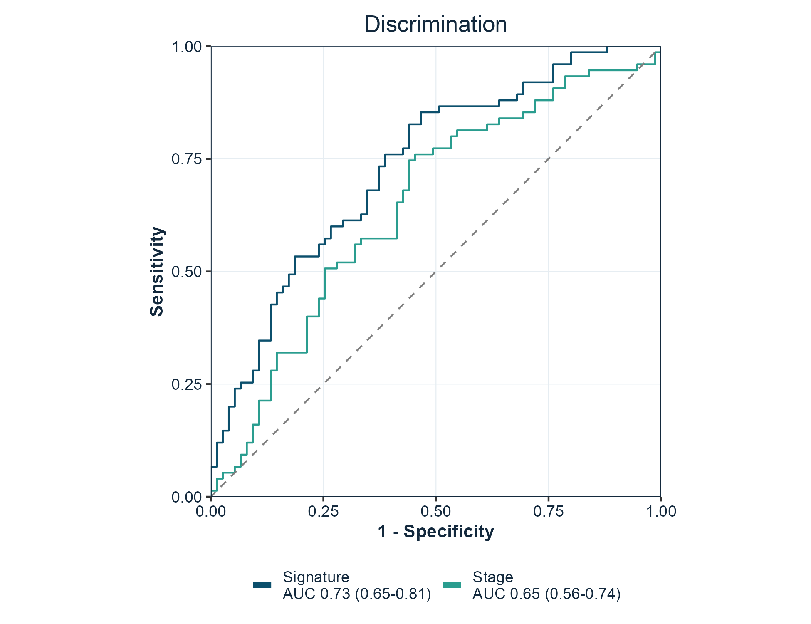
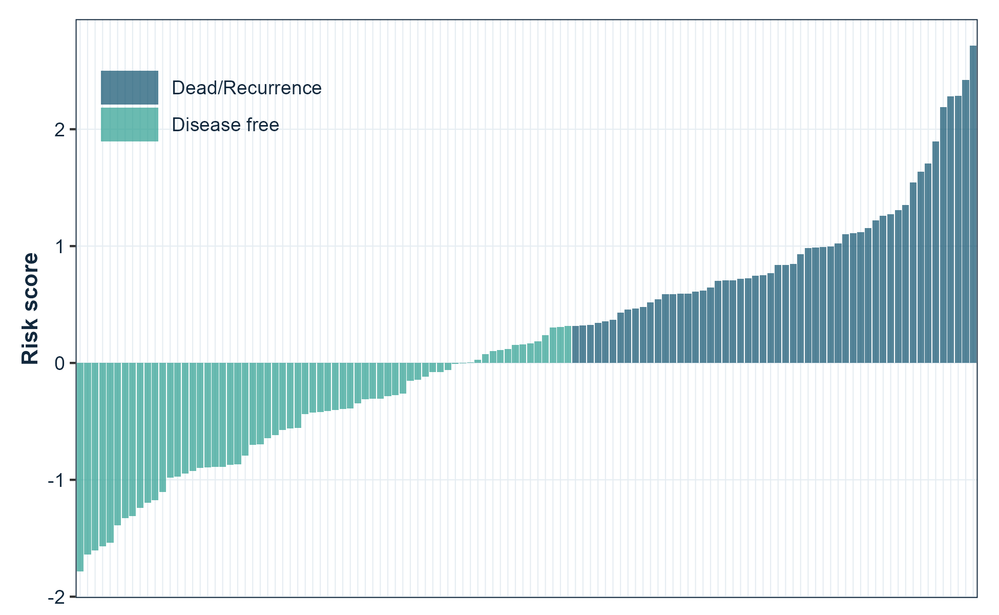

Publication-ready figures for cancer bioinformatics, in the style the lab submits with. Kaplan-Meier curves with hazard ratios, ROC and time-dependent ROC curves, risk-score distributions, dimensionality-reduction projections, boxplots and correlation plots, lasso coefficient paths, enrichment plots, and immune-infiltration radar charts.
Every function returns a ggplot object, so figures stay editable with the usual ggplot2 grammar.
library(gfplot)
p <- plot_KMCurve(clin, labels)
gfplot_save(p, "figure1.png", width = 7, height = 5)Why gfplot exists
Two problems come up on every manuscript. Figures drift apart, because each one is tuned by hand until nothing matches. And the code that produced them lives in one-off scripts, so the next paper starts from scratch.
gfplot fixes the second problem by making those figures functions, and the first by being opinionated about presentation:
- Arial on every figure. The typeface journals ask for, set as the default on every function rather than applied per plot.
-
One baseline theme. Loading the package sets the
ggplot2theme tocowplot::theme_cowplot(), so every figure in the session starts from the same look. -
Journal palettes.
get_color()returns colour-blind-friendly palettes in thenature,jco,lancet,jama, andjama_classicstyles.
This is a deliberate choice, not a side effect. Attaching gfplot is a statement that this is the intended house style, and the package applies it consistently. See Figure style to change any part of it.
Installation
Prebuilt binaries for Linux, macOS, and Windows come from r-universe, so no compiler is needed:
install.packages(
"gfplot",
repos = c(gflab = "https://gflab.r-universe.dev", CRAN = "https://cloud.r-project.org")
)Installing from source through GitHub also works:
# install.packages("remotes")
remotes::install_github("gflab/gfplot")R 4.1 or later. The historical path gaofeng21cn/gfplot redirects here, so older scripts keep working.
Quick start
Kaplan-Meier curves
Survival curves with the log-rank p-value, the hazard ratio from a univariable Cox model, and a number-at-risk table.

ROC curves
One curve per marker, with the area under the curve and its confidence interval in the legend. force05 = TRUE flips markers that rank the data backwards so every curve rises.

Risk score distributions
Patients ordered by score, coloured by outcome, which is the standard companion panel to a survival curve.

plot_RiskScore(risk_score, event, legend.position = c(0.15, 0.85))Functions
Every function returns a ggplot object.
| Area | Functions |
|---|---|
| Survival |
plot_KMCurve(), generate_time_event()
|
| Discrimination |
plot_ROC(), plot_TimeROC(), plot_MulROC()
|
| Prediction performance |
plot_pr_curve(), plot_calibration(), plot_decision_curve()
|
| Clinical utility | plot_decision_curve() |
| Time-to-event | plot_cumulative_incidence() |
| Effect estimates |
plot_forest(), plot_lasso()
|
| Sample-level figures |
plot_RiskScore(), plot_Boxplot(), plot_barplot(), plot_cor(), plot_violin()
|
| Projections |
plot_embedding(), plot_PCA(), plot_UMAP(), plot_tsne()
|
| Matrix pattern |
plot_heatmap(), plot_confusion()
|
| Genomic and omics |
plot_volcano(), plot_GO()
|
| Trial response | plot_waterfall() |
| Enrichment and immune |
viewGSEA(), ggGSEA(), plot_immune()
|
| Style and output |
get_color(), gfplot_save(), gfplot_font_setup()
|
gfplot_families() lists every figure the package can draw, with its category and an example call.
Notable arguments:
| Function | Argument | Purpose |
|---|---|---|
plot_KMCurve() |
risk.table |
Draw the number-at-risk table |
plot_KMCurve() |
limit |
Censor follow-up at a time point |
plot_KMCurve() |
annot |
Add your own annotation lines |
plot_ROC() |
force05 |
Flip markers that rank backwards |
plot_ROC() |
percent.style |
Label axes as percentages |
plot_UMAP(), plot_PCA()
|
palette |
Choose the group colours |
| every plot | font |
Override the typeface for one figure |
Forest plots
plot_forest() draws hazard ratios, odds ratios, or mean differences with their confidence intervals and the numbers alongside. It reads a clinstats regression table directly, so a result goes from model to figure without reshaping:
library(clinstats)
table <- cox_table(
clin_crc,
time = "rfs.delay", event = "rfs.event",
factors = c("sex", "age", "tnm.stage"), multivariable = "none"
)
plot_forest(
table,
term = "term", estimate = "hr_univariable",
lower = "univ_ci_lower", upper = "univ_ci_upper", p = "univ_p",
log_scale = TRUE, title = "Overall survival (univariable)"
)Ratios use a log axis, where a halving and a doubling are the same distance. Pass log_scale = FALSE for an effect measured as a difference, which may legitimately cross zero.
Programmatic use
A figure can also be described as a value and drawn later, which is what a pipeline or an agent needs when the numbers and the chart are decided in different places:
spec <- gfplot_spec(
"forest",
data = table, term = "term",
estimate = "hr_univariable",
lower = "univ_ci_lower", upper = "univ_ci_upper",
p = "univ_p", log_scale = TRUE
)
gfplot_save(gfplot_render(spec), "figure2.png", width = 7, height = 4)gfplot_families() lists every figure the package can draw and how to call it.
Prediction performance and clinical utility
plot_ROC() answers whether a model can rank patients. Three companion figures answer what follows, which is usually the harder question:
# Precision against recall, for a rare positive class
plot_pr_curve(scores, outcome)
# Is the model honest about the probability it predicts?
plot_calibration(probability, outcome, bins = 10)
# Does acting on it do more good than harm?
plot_decision_curve(probability, outcome)plot_calibration() bins the predictions into quantiles and draws binomial intervals, so each point rests on a similar number of observations. plot_decision_curve() draws the net benefit against treating everyone and treating no one.
Competing risks
When a patient can experience one of several mutually exclusive events, a Kaplan-Meier estimate of a single event is biased upward: patients who had a competing event are still counted as being at risk of the event of interest. plot_cumulative_incidence() uses the cumulative incidence function instead.
# status: 0 censored, 1 event of interest, 2 competing event
plot_cumulative_incidence(time, status, group = arm)Other figures
plot_volcano(effect, p_value, label) # differential analysis
plot_waterfall(response) # ranked patient response
plot_heatmap(matrix, diverging = TRUE) # correlation or signature matrix
plot_confusion(predicted, actual, positive = 1)# classification counts
plot_violin(value, group) # distributions with observations
plot_embedding(data, groups, method = "tsne") # PCA, t-SNE, or UMAPSave a figure
gfplot_save() writes a file through a graphics device that can render the figure font, chosen from the file extension. .png, .tiff, .jpg, and .pdf are supported.
gfplot_save(p, "figure1.png", width = 7, height = 5, dpi = 300)
gfplot_save(p, "figure1.pdf", width = 7, height = 5)Use a journal size preset to produce the figure at the width it will be printed, rather than scaling it afterwards:
gfplot_save(p, "figure2.png", size = "single") # 85 mm, one column
gfplot_save(p, "figure2.png", size = "onehalf") # 114 mm, 1.5 columns
gfplot_save(p, "figure2.png", size = "double") # 170 mm, full width
gfplot_save(p, "figure2.png", size = "slide") # 16:9 presentationAn explicit width or height overrides the preset for that dimension.
Add provenance = TRUE to write a .provenance.json beside the figure recording what produced it:
gfplot_save(p, "figure2.png", size = "double", provenance = TRUE){
"schema": "gfplot.provenance.v1",
"figure": { "kind": "spec", "family": "forest" },
"output": { "format": "png", "width_in": 6.69, "sha256": "…" },
"environment": { "gfplot": "0.6.0", "r": "R version 4.6.0" }
}That record is what lets a figure in a manuscript be traced back to the code and versions that drew it.
Figures are drawn when they are printed, so a plot object is only turned into a file by gfplot_save(), print(), or ggsave().
Fonts
Figures use Arial, which is what journals ask for. Most output needs no preparation: the raster devices in ragg and the quartz device on macOS resolve system fonts directly.
The base pdf() device keeps its own font table and is the one route that needs help. gfplot_font_setup() reports the state of every route and registers Arial with pdf() through extrafont when it is installed:
gfplot_font_setup()
#> Figure font "Arial" can be rendered by:
#> • ragg raster devices (PNG, TIFF, JPEG): yes
#> • quartz (macOS PDF and screen): yes
#> • base pdf(): noOn macOS, gfplot_save(p, "figure.pdf") uses quartz and needs none of this; the file embeds the real font. Every plotting function also takes font, so a single figure can use a different family.
Figure style
The house style is defined once, in three functions, so every figure in a manuscript matches without per-figure tuning.
| Function | What it sets |
|---|---|
gfplot_theme() |
Type, grid, panel border, and legend placement |
gfplot_colors() |
Colours by role — "model_curve", "comparator_curve", "reference_line"
|
gfplot_legend() |
Legend wrapping and when to hide it |
Colours are addressed by role rather than by hex value, so a figure states what a colour is for:
gfplot_colors("primary")
#> primary
#> "#0B4F6C"
gfplot_colors(c("model_curve", "comparator_curve"))
#> model_curve comparator_curve
#> "#0B4F6C" "#2A9D8F"Risk-group labels are matched by meaning, not spelling, so “Low Risk”, “low-risk”, and “low risk” all take the model-curve colour.
Retune the whole suite for a session by overriding a role; no figure code changes:
Each part can also be changed for a single figure:
# A larger base size for a figure that will be printed small
plot_KMCurve(clin, labels) + gfplot_theme(base_size = 14)
# One figure in a different typeface
plot_ROC(scores, labels, font = "Helvetica")
# One figure with a journal palette instead of the house ramp
plot_UMAP(embedding, groups, palette = "lancet")
# Keep an existing theme instead of adopting the baseline
options(gfplot.set_theme = FALSE)
library(gfplot)Optional back ends
Functions that build on specialised packages check for them at call time and report what to install, so library(gfplot) always works.
| Function | Back end | Install |
|---|---|---|
plot_KMCurve() |
survminer | install.packages("survminer") |
plot_TimeROC() |
survivalROC | install.packages("survivalROC") |
plot_UMAP(), plot_embedding(method = "umap")
|
umap | install.packages("umap") |
plot_tsne() |
Rtsne | install.packages("Rtsne") |
plot_lasso() |
glmnet | install.packages("glmnet") |
plot_immune() |
ggradar | remotes::install_github("ricardo-bion/ggradar") |
viewGSEA(), ggGSEA()
|
DOSE, fgsea | BiocManager::install(c("DOSE", "fgsea")) |
plot_barplot(), plot_violin() significance |
ggpubr, ggsignif | install.packages(c("ggpubr", "ggsignif")) |
gfplot_save() raster output |
ragg | install.packages("ragg") |
gfplot_save(provenance = TRUE) hashing |
digest | install.packages("digest") |
plot_forest() from a clinstats table |
clinstats | remotes::install_github("gflab/clinstats") |
Citation
citation("gfplot")See CITATION.cff for machine-readable metadata. Both v0.1.0 and v0.3.0 are tagged, so a specific state can be pinned.
Provenance
gfplot was published first at gaofeng21cn/gfplot and later at gflab/gfplot. The repository was deleted in August 2026. Other public research code still installed it — LidocaineQ/PIANOS calls devtools::install_github("gflab/gfplot") in its README and notebooks — so those install commands became dead links.
The package was restored in September 2026 from a verified git bundle of the full history. The recovered commit 89a60bdb carries the original 0.1.0 sources unchanged and is tagged v0.1.0; v0.2.0 and v0.3.0 add the modernisation on top. The repository moved to the gflab organisation, which is why the personal path redirects here and both install commands resolve to the same commit.
Every exported function keeps its 0.1.0 name and arguments, so existing calls continue to work without edits. If you are reading this because an install failed in that window, the package is installable again and no change to your code is required.
Getting help
Bug reports and feature requests are welcome through GitHub Issues. Reference documentation for every function is on the package site.
License
Apache License 2.0. See LICENSE.md. Copyright 2026 FengGao Lab contributors.
Versions before 0.4.1 were released under the MIT licence; those tags keep the terms they were published with.